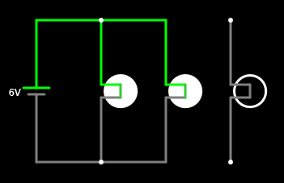

3. Connection in parallel¶
Two components are connected in parallel if their two terminals are connected to each other, forming two branches.
The parallel connection has the property of maintaining the same tension in all its components. These are also independent. If we withdraw one of the components in parallel, the other components will continue to function the same as before.
Parallel generators¶
The parallel generators add their currents to be able to deliver more common than one.
Batteries are not usually connected in parallel because it barely provides advantages and can present problems if batteries are not exactly identical, when they are discharged on each other. To achieve more current, larger batteries or batteries are used, instead of using parallel batteries.
The generators of the electric plants do connect in parallel to be able to generate much more electric current than could deliver a single generator. This connection is quite delicate because all generators have to have the same tension and work in unison. Otherwise there will be variations in the electricity grid that could end in an electric blackout.
Parallel receptors¶
Receptors usually connect in parallel to work independently from each other. Thus, the different bulbs of a lamp will connect in parallel so that if one of them melts or removes, the other bulbs will continue to function equally.
Simulates in the online simulator the following circuits with parallel lamps to see how it affects the tension of each lamp:

Note
Cables in a parallel connection should be drawn little by little by joining each of the connection points:



If we now disconnect one of the lamps in parallel, we can check how all the rest of the circuit continues to work:

Exercises¶
- What is a circuit in parallel?
- What properties does the connection in parallel have?
- Is it common to connect the batteries in parallel? Explain the answer.
- Why are the generators of parallel power plants connect?
- Draw three bulbs connected in parallel to a battery.
- What happens if a lamp is melted in parallel with other lamps?